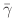
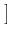

The first line of a MIF file must be of the form ``# MIF x.y'',
where x.y represents the format revision number, here 2.1. Unlike
MIF 1.1 files, the structure of MIF 2.1 files are governed by the
requirement that they be valid Tcl scripts, albeit with a handful of
extensions. These files are evaluated inside a Tcl interpreter, which
may be a ``safe'' interpreter, i.e., one in which disk and other system
access is disabled. (Refer to the documentation of the Tcl interp command for details on safe interpreters.) The security
level is controlled by the MIFinterp option in the options.tcl
customization file.
The default setting is
which enables all the Tcl interpreter extensions described in the MIF 2.1 Extension Commands section below, but otherwise provides a standard Tcl safe interpreter. The keyword custom above may be replaced with either safe or unsafe. The safe selection is similar to custom, except that the ReadFile and RGlob extensions are not provided, thereby eliminating all disk access at the MIF script level. At the other extreme, choosing unsafe provides an unrestricted Tcl interpreter. This option should be used with caution, especially if you are reading MIF files from an unknown or untrusted source.Oc_Option Add Oxs* MIFinterp safety custom
After the first line, there is considerable flexibility in the layout of the file. Generally near the top of the file one places any OOMMFRootDir, Parameter, and RandomSeed statements, as desired.
This is followed by the major content of the file, the various Specify blocks, which initialize Oxs_Ext objects:
The mesh object details the spatial discretization of the simulation volume. Conventionally its Specify block follows the Specify block for the main atlas object; the mesh is referenced by the driver, so in any event the mesh Specify block needs to precede the driver Specify block.
The energy terms describe the typical micromagnetic energies and fields that determine the evolution of the simulation, such as exchange energy, magnetostatic fields, and anisotropy energies. Material parameters, such as the anisotropy constant K1 and the exchange constant A, are generally specified inside the Specify block for the relevant energy, e.g., Oxs_UniaxialAnisotropy or Oxs_Exchange6Ngbr. The exception to this is saturation magnetization, Ms, which is declared in the driver Specify block. The initial magnetization, m0, is also specified in the driver Specify block. In many cases these material parameters may be varied spatially by defining them using scalar or vector field objects. As discussed in the section on Specify Conventions, auxiliary objects such as scalar and vector fields can be defined either inline (i.e., inside the body of the referencing Specify block) or in their own, standalone top-level Specify blocks. In the latter case, the auxiliary Specify blocks must precede the referencing Specify blocks in the MIF 2.1 file.
Given the energies and fields, the evolver and driver form a matched pair that advance the magnetic state from an initial configuration, obeying either Landau-Lifshitz-Gilbert (LLG) dynamics or direct energy minimization. For energy minimization studies, the driver must be an Oxs_MinDriver object, and the evolver must be a minimization evolver. At the time of this writing, the only minimization evolver packaged with OOMMF is the Oxs_CGEvolve conjugate-gradient evolver. For time-evolution (LLG) simulations, the driver must be an Oxs_TimeDriver object, and the evolver must be a time evolver, such as Oxs_RungeKuttaEvolve. The evolver to be used is cited inside the driver Specify block, so the evolver must precede the driver in the MIF 2.1 file. As noted above, the pointwise saturation magnetization Ms and initial magnetization configuration m0 are declared inside the driver Specify block as well.
The pre-specified outputs, indicated by zero or more Destination and Schedule commands, are conventionally placed after the Specify blocks. Output selection can also be modified at runtime using the Oxsii or Boxsi interactive interfaces.
Auxiliary Tcl procs may be placed anywhere in the file, but commonly either near their point of use or else at the bottom of the MIF file. If a proc is only referenced from inside Specify blocks, then it can be placed anywhere in the file. On the other hand, if a proc is used at the top level of the MIF file, for example to dynamically create part of the problem specification ``on-the-fly,'' then it must be defined before it is used, in the normal Tcl manner.
A sample MIF 2.1 file is included below. More details on the individual Oxs_Ext objects can be found in the Standard Oxs_Ext Child Classes section of the Oxs documentation.
Here is a simple Specify block:
Specify Oxs_EulerEvolve:foo {
alpha 0.5
start_dm 0.01
}
The name of the new Oxs_Ext object is ``Oxs_EulerEvolve:foo.''
The first part of this name, up to the colon, is the the C++ class name of the object. This must be a child of the Oxs_Ext
class. Here, Oxs_EulerEvolve is a class that integrates the
Landau-Lifshitz ODE using a simple forward Euler method. The second
part of the name, i.e., the part following the colon, is
the instance name for
this particular instance of the object. In general, it is possible to
have multiple instances of an Oxs_Ext child class in a simulation,
but each instance must have a unique name. These names are used for
identification by output routines, and to allow one Specify block to
refer to another Specify block appearing earlier in the MIF file. If
the second part of the name is not given, then as a default the empty
string is appended. For example, if instead of ``Oxs_EulerEvolve:foo''
above the name was specified as just ``Oxs_EulerEvolve'', then the
effective full name of the created object would be
``Oxs_EulerEvolve:''.
The second argument to the Specify command, here everything between the curly braces, is a string that is interpreted by the new Oxs_Ext (child) object in its constructor. The format of this string is up to the designer of the child class, but there are a number of conventions that designers are encouraged to follow. These conventions are described in the Specify Conventions section below.
where the parameter is the full name (here Oxs_EulerEvolve:foo) of the Specify block to remove. If no parameter is given, then all preceding Specify blocks are removed.ClearSpec Oxs_EulerEvolve:foo
This command associates a symbolic desttag with an application. The tags are used by the Schedule command to refer to specific application instances. The appname may either be an OOMMF application name, e.g., mmDisp, or else a specific application instance in the form application:nickname, such as mmDisp:Spock. In the first case, the tag is associated with the running instance of the requested application (here mmDisp) with the lowest OOMMF ID (OID) that has not yet been associated with another tag. If no running application can be found that meets these criteria, then a new instance of the application is launched.Destination <desttag> <appname> [new]
If the appname refers to a specific application instance, then the tag is associated with the running instance of the application (say mmDisp) that has been assigned the specified nickname. Name matching is case insensitive. If there is no running copy of the application meeting this condition, then a new instance of the application is launched and it is assigned the specified nickname. The OOMMF account service directory guarantees that there is never more than one instance of an application with a given nickname. However, as with the object name in the Specify command, instances of two different applications, e.g., mmDisp and mmGraph, are allowed to share nicknames, because their full instance names, say mmDisp:Spock and mmGraph:Spock, are unique.
The Destination commands are processed in the order in which they appear in the the MIF file. No desttag may appear in more than one Destination command, and no two destination tags may refer to the same application instance. To insure the latter, the user is advised to place all Destination commands referring to specific instances (e.g., mmDisp:Spock) before any Destination commands using generic application references (e.g., mmDisp). Otherwise a generic reference might be associated to a running application holding a nickname that is referenced by a later Destination command.
The tag association by the Destination command is only known to the solver reading the MIF file. In contrast, assigned instance nicknames are recognized across applications. In particular, multiple solvers may reference the same running application by nickname. For example, several sequential solver runs could send stage output to the same mmGraph widget, to build up overlapping hysteresis loops.
The last parameter to the Destination command is the optional new keyword. If present, then a fresh copy of the requested application is always launched for association with the given tag. The new option can be safely used with any generic application reference, but caution must be taken when using this option with specific instance references, because an error is raised if the requested nickname is already in use.
In this context one should always use Tcl path conventions. In particular, use forward slashes, ``/'', to separate directories.set outfile [OOMMFRootDir]/data/myoutput
Parameter varname optional_default_valueHere varname is the name of a variable that may be set from the command line. If it is not set on the command line then the variable is set to the optional default value, if any, or otherwise an error is raised. An error is also raised if a variable set on the command line does not have a corresponding Parameter command in the MIF file. See also the notes on variable substitution below.
The translation specification should be one of binary, auto (the default), image or floatimage. The first two translation modes provide the functionality of the -translation option of the Tcl fconfigure command. Refer to the Tcl documentation for details. Specifying image causes the input file to be read as an image file. The file will be read directly if it in the PPM P3 (text), PPM P6 (binary), or uncompressed BMP formats; otherwise it is filtered through the OOMMF any2ppm program. (Note that any2ppm requires Tk, and Tk requires a display.) The input file is converted into a string that mimics a PPM P3 text file, minus the leading ``P3''. In particular, after conversion the first 3 whitespace separated values are image width, height and maxvalue, followed by an array of 3 x width x height values, where each triplet corresponds to the red, green and blue components of an image pixel, sequenced in normal English reading order. Each component is in the range [0, maxvalue] . This output contains no comments, and may be treated directly as a Tcl list. The floatimage option is very similar to the image option, except that the third value (i.e., maxvalue) in the resulting string is always ``1'', and the succeeding red, green and blue values are floating point values in the range [0, 1] .
In all cases, the return value from the ReadFile command is a string corresponding to the contents of the (possibly translated) file. For example,
can be used to embed a separate Tcl file into a MIF 2.1 file.eval [ReadFile extra_mif_commands.tcl]
Here's a more complicated example that uses a color image file to create a vector field:
set colorimage [ReadFile mirror.ppm floatimage]
set imagewidth [lindex $colorimage 0]
set imageheight [lindex $colorimage 1]
set imagedepth [lindex $colorimage 2] ;# Depth value should be 1
if {$imagedepth != 1} {
Report "ReadFile returned unexpected list value."
}
proc ColorField { x y z } {
global colorimage imagewidth imageheight
set i [expr {int(floor(double($x)*$imagewidth))}]
if {$i>=$imagewidth} {set i [expr {$imagewidth-1}]}
set j [expr {int(floor(double(1-$y)*$imageheight))}]
if {$j>=$imageheight} {set j [expr {$imageheight-1}]}
set index [expr {3*($j*$imagewidth+$i)+3}] ;# +3 is to skip header
set vx [expr {2*[lindex $colorimage $index]-1}] ; incr index ;# Red
set vy [expr {2*[lindex $colorimage $index]-1}] ; incr index ;# Green
set vz [expr {2*[lindex $colorimage $index]-1}] ; incr index ;# Blue
return [list $vx $vy $vz]
}
Specify Oxs_ScriptVectorField:sample {
atlas :atlas
norm 1.0
script ColorField
}
If the input image is large, then it is best to work with the image list
(i.e., the variable colorimage in the preceding example) directly,
as illustrated above. The image list as returned by ReadFile is in
a packed format; if you make modifications to the list values then the
memory footprint of the list can grow substantially.
The ReadFile command is not available if the MIFinterp safety option is set to safe in the options.tcl customization file.
The optional typelist restricts the match to files meeting the typelist criteria. The optionalRGlob [-types typelist] [--] pattern [...]
-- switch marks the end of
options. The one or more pattern's should be glob-style
patterns (strings containing asterisks and question marks) intended to
match filenames in the current working directory. See the Tcl glob documentation for details on the -types option and
glob pattern details.
One use of this command is to identify files created by earlier runs of Oxs. For example, suppose we wanted to use the mmArchive magnetization output from the third stage of a previous MIF file with basename ``sample''. Output files are tagged by stage number (here ``2'' since stages are counted from 0) and iteration. The iteration is generally not known a priori, but assuming the output files are in the same directory as the current MIF file, we could use a command like
to determine the name of the magnetization file. If more than one magnetization state was saved for that stage, then the variable file will hold a list of filenames. In this case the Tcl lsort command can be used to select the one with the highest iteration number. The file variable can be used in conjunction with the Oxs_FileVectorField class to import the magnetization into the new simulation, for example to set the initial magnetization configuration.set file [RGlob sample-Oxs_MinDriver-Magnetization-02-???????.omf]
The RGlob command is not available if the MIFinterp safety option is set to safe in the options.tcl customization file. If MIFinterp safety is set to unsafe, then the standard (and more capable) Tcl glob command will be available.
The syntax for the Schedule command is
The Schedule command mirrors the interactive output scheduling provided by the Oxsii and Boxsi graphical interfaces. The first parameter to the Schedule command is the name of the output being scheduled. These names are the same as those appearing in the ``Outputs'' list in the Oxs graphical interfaces, for example ``DataTable'' or ``Oxs_CubicAnisotropy:Nickel:Field.'' The name must be presented to the Schedule command as a single argument; if the name includes one or more spaces then use double quotes to protect the spaces. Aside from the DataTable output which is always present, the outname's are MIF file dependent.Schedule <outname> <desttag> <event> <frequency>
The second parameter to the Schedule command is a destination tag. This is a tag associated to a running application by a previous Destination command. The symbolic destination tag replaces the application:OID nomenclature used in the graphical interface, because in general it is not possible to know the OOMMF ID for application instances at the time the MIF file is composed. In fact, some of the applications may be launched by Destination commands, and so don't even have OID's at the time the Destination command is processed.
The event parameter should be one of the keywords Step, Stage, or Done. For Step and Stage events the frequency parameter should be a positive integer, representing with what frequency of the specified event should output be dispatched. For example, if Step 5 is given, then on every fifth step of the solver output of the indicated type will be sent to the selected destination. Set frequency to 1 to send output each time the event occurs. The Done event occurs at the successful completion of a simulation; as such, there is at most one ``Done'' event per simulation. Accordingly, the frequency parameter for Done events is optional; if present it should be the value 1.
There are examples of scheduling with the Destination and Schedule commands in the sample MIF 2.1 file. There, three destinations are tagged. The first refers to a possibly already running instance of mmGraph, having nickname Hysteresis. The associated Schedule command sends DataTable output to this application at the end of each Stage, so hysteresis graphs can be produced. The second destination tag references a different copy of mmGraph that will be used for monitoring the run. To make sure that this output is rendered onto a blank slate, the new keyword is used to launch a fresh copy of mmGraph. The Schedule command for the monitor destination delivers output to the monitoring mmGraph every 5 iterations of the solver. The last Destination command tags an arbitrary mmArchive application, which is used for file storage of DataTable results at the end of each stage, and snapshots of the magnetization and total field at the end of every third stage. Note that double quotes enclose the ``Oxs_EulerEvolve::Total field'' output name. Without the quotes, the Schedule command would see five arguments, ``Oxs_EulerEvolve::Total'', ``field'', ``archive'', ``Stage'', and ``3''.
Specify Oxs_EulerEvolve:foo {
alpha 0.5
start_dm 0.01
}
The first convention is that the initialization string be structured as
a Tcl list with an even number of elements, with
consecutive elements consisting of a label + value pairs. In the above
example, the initialization string consists of two label + value pairs,
``alpha 0.5'' and ``start_dm 0.01''. The first specifies that the
damping parameter 
in the Landau-Lifshitz ODE is 0.5. The
second specifies the initial step size for the integration routine.
Interested parties should refer to a Tcl programming reference (e.g.,
[20]) for details on forming a proper Tcl list, but in short
the items are separated by whitespace, and grouped by double quotes or
curly braces (``{'' and ``}''). Opening braces and quotes
must be whitespace separated from the preceding text. Grouping
characters are removed during parsing. In this example the list as a
whole is set off with curly braces, and individual elements are white
space delimited. Generally, the ordering of the label + value pairs in
the initialization string is irrelevant, i.e., start_dm 0.01 could
equivalently precede alpha 0.5.
Sometimes the value portion of a label + value pair will itself be a list, as in this next example:
- Specify Oxs_BoxAtlas:myatlas {
- ...
- }
- Specify Oxs_RectangularMesh:mymesh {
- cellsize { 5e-9 5e-9 5e-9 }
- atlas Oxs_BoxAtlas:myatlas
- }
Here the value associated with ``cellsize'' is a list of 3 elements, which declare the sampling rate along each of the coordinate axes, in meters. (Oxs_BoxAtlas is a particular type of Oxs_Atlas, and ``...'' mark the location of the Oxs_BoxAtlas initialization string, which is omitted because it is not pertinent to the present discussion.)
Alternatively, the Oxs_RectangularMesh object could define an Oxs_BoxAtlas object inline:
- Specify Oxs_RectangularMesh:mymesh {
- atlas { Oxs_BoxAtlas {
- ...
- }}
- cellsize { 5e-9 5e-9 5e-9 }
- }
In place of the name of an external atlas object, a two item list is provided consisting of the type of object (here Oxs_BoxAtlas) and the corresponding initialization string. The initialization string is provided as a sublist, with the same format that would be used if that object were initialized via a separate Specify block.
More commonly, embedded Oxs_Ext objects are used to initialize spatially varying quantities. For example,
Specify Oxs_UniaxialAnisotropy {
axis { Oxs_RandomVectorField {
min_norm 1
max_norm 1
}}
K1 { Oxs_UniformScalarField { value 530e3 } }
}
The magneto-crystalline anisotropy class Oxs_UniaxialAnisotropy
supports cellwise varying K1 and anisotropy axis directions. In this
example, the anisotropy axis directions are randomly distributed. To
initialize its internal data structure, Oxs_UniaxialAnisotropy
creates a local Oxs_RandomVectorField object. This object is
also a child of the Oxs_Ext hierarchy, which allows it to be
constructed using the same machinery invoked by the Specify
command. However, it is known only to the enclosing
Oxs_UniaxialAnisotropy object, and no references to it are
possible, either from other Specify blocks or even elsewhere inside
the same initialization string. Because it cannot be referenced, the
object does not need an instance name. It does need an initialization
string, however, which is given here as the 4-tuple ``min_norm 1
max_norm 1''. Notice how the curly braces are nested so that this
4-tuple is presented to the Oxs_RandomVectorField initializer as a
single item, while ``Oxs_RandomVectorField'' and the associated
initialization string are wrapped up in another Tcl list, so that the
value associated with ``axis'' is parsed at that level as a single item.
The value associated with ``K1'' is another embedded Oxs_Ext object. In this particular example, K1 is desired uniform (homogeneous) throughout the simulation region, so the trivial Oxs_UniformScalarField class is used for initialization (to the value 530e3 J/m^3). In the case of uniform fields, scalar or vector, a shorthand notation is available that implicitly supplies a uniform Oxs_Ext field class:
Specify Oxs_UniaxialAnisotropy {
axis { 1 0 0 }
K1 530e3
}
which is equivalent to
Specify Oxs_UniaxialAnisotropy {
axis { Oxs_UniformVectorField {
vector { 1 0 0 }
}}
K1 { Oxs_UniformScalarField { value 530e3 } }
}
While embedding Oxs_Ext objects inside Specify blocks can be convenient, it is important to remember that such objects are not available to any other Oxs_Ext object--only objects declared via top-level Specify blocks may be referenced from inside other Specify blocks. Also, embedded Oxs_Ext objects cannot directly provide user output. Furthermore, the only Oxs_Energy energy objects included in energy and field calculations are those declared via top-level Specify blocks. For this reason Oxs_Energy terms are invariably created via top-level Specify blocks, and not as embedded objects.
{ 1.1 1.2 1.2 1.2 1.2 1.3 }
In a grouped list the middle run of 1.2's may be represented as a
sublist with a repeat count of 4, like so
{ 1.1 { 1.2 4 } 1.3 :expand: }
Here the :expand: keyword, when appearing as the last element of
the top level list, enables the group expansion mechanism. Any
preceding element, such as { 1.2 4 }, that 1) is a proper
sublist, and 2) has a positive integer as the last element, is treated
as a grouped sublist with repeat count given by the last element. No
element of the top-level list is ever interpreted as a repeat count.
For example, the short form of the list
{ 1e-9 1e-9 1e-9 1e-9 1e-9 1e-9 }
is
{ { 1e-9 6 } :expand: }
Note the additional level of brace grouping. Grouped lists may also be
nested, as in this example
{ 5.0 { 5.1 { 5.2 3 } 5.3 2 } :expand: }
which is equivalent to
{ 5.0 5.1 5.2 5.2 5.2 5.3 5.1 5.2 5.2 5.2 5.3 }
There are some difficulties with this mechanism when the list components
are strings, such as filenames, that may contain embedded spaces. For
example, consider the list
{ "file 3" "file 3" "5 file" }
If we tried to write this as
{ { "file 3" 2 } "5 file" :expand: }
we would find that, because of the nested grouping rules, this grouped
list gets expanded into
{ file file file file file file "5 file" }
Here the trailing ``3'' in ``file 3'' is interpreted as a repeat count.
Following normal Tcl rules, the double quotes are treated as equivalents
to braces for grouping purposes. However, the keyword :noexpand:
may be used to disable further expansion, like so
{ { {"file 3" :noexpand:} 2 } "5 file" :expand: }
The :noexpand: keyword placed at the end of a list disables all
group expansion in that list. Although it is an unlikely example,
if one had a flat, i.e., non-grouped list with last element ``:expand:'',
then one would have to disable the grouping mechanism that would
otherwise be invoked by appending :noexpand: to the list. In
flat lists generated by program code, it is recommended to append
:noexpand: just to be certain that the list is not expanded.
As a matter of nomenclature, standard (i.e., flat) lists and single values are also considered grouped lists, albeit trivial ones. Any Oxs object that accepts grouped lists in its Specify block should explicitly state so in its documentation.
Specify Oxs_UniaxialAnisotropy {
axis { 1 0 0 }
comment {K1 4500e3}
K1 530e3
comment { 530e3 J/m^3 is nominal for Co }
}
Pay attention to the difference between ``comment'' used here as the
label portion of a label + value pair, and the MIF extension command
``Ignore'' used outside Specify blocks. In particular, Ignore
takes an arbitrary number of arguments, but the value element associated
with a comment label must be grouped as a single element, just as any
other value element.
Specify Oxs_LabelValue:probdata {
alpha 0.5
start_dm 0.01
}
Specify Oxs_EulerEvolve {
attributes :probdata
}
The Oxs_LabelValue object is an Oxs_Ext class that does
nothing except hold label + value pairs. The ``attributes'' label acts as an
include statement, causing the label + value pairs contained in the
specified Oxs_LabelValue object to be embedded into the enclosing
Specify initialization string. This technique is most useful if the
label + value pairs in the Oxs_LabelValue object are used in
multiple Specify blocks, either inside the same MIF file, or
across several MIF files into which the Oxs_LabelValue block is
imported using the ReadFile MIF extension command.
Here is an example proc that may be used to set the initial magnetization configuration into an approximate vortex state, with a central core in the positive z direction:
proc Vortex { x_rel y_rel z_rel } {
set xrad [expr {$x_rel-0.5}]
set yrad [expr {$y_rel-0.5}]
set normsq [expr {$xrad*$xrad+$yrad*$yrad}]
if {$normsq <= 0.0125} {return "0 0 1"}
return [list [expr {-1*$yrad}] $xrad 0]
}
The return value in this case is a 3D vector representing the spin
direction at the point (x_rel,y_rel,z_rel). Procs
that are used to set scalar properties, such as saturation
magnetization Ms
, return a scalar value instead. But in both
cases, the import argument list specifies a point in the simulation
mesh.
In the above example, the import point is specified relative to the extents of the simulation mesh. For example, if x_rel were 0.1, then the x -coordinate of the point is one tenth of the way between the minimum x value in the simulation and the maximum x value. In all cases x_rel will have a value between 0 and 1.
In most support proc examples, relative coordinates are the most flexible and easiest representation to work with. However, by convention, scripting Oxs_Ext classes also support absolute coordinate representations. The representation used is selected in the Oxs_Ext object Specify block by the optional script_args entry. The Tcl proc itself is specified by the script entry, as seen in this example:
proc SatMag { x y z } {
if {$z < 20e-9} {return 8e5}
return 5e5
}
Specify ScriptScalarField:Ms {
atlas :atlas
script_args { rawpt }
script SatMag
}
The value associated with the label script_args should in this
case be a subset of {relpt rawpt minpt maxpt span scalars
vectors }, as explained in the
Oxs_ScriptScalarField
documentation. Here
rawpt provides the point representation in problem coordinates,
i.e., in meters. Other Oxs_Ext objects support a different list
of allowed script_args values. Check the documentation of the
Oxs_Ext object in question for details. Please note that the
names used in the proc argument lists above are for exposition purposes
only. You may use other names as you wish. It is the order of the
arguments that is important, not their names. Also, MIF 2.1 files are
parsed first in toto before the Specify blocks are evaluated, so the
support procs may be placed anywhere in a MIF 2.1 file, regardless of
the location of the referencing Specify blocks. Conversely,
MIF 2.2
files are parsed in a single pass, with Specify blocks evaluated as they
are read. Therefore for MIF 2.2 files it is generally best to place
proc definitions ahead of Specify blocks in which they are referenced.
The command call to the Tcl support proc is actually built up by appending to the script value the arguments as specified by the script_args value. This allows additional arguments to the Tcl proc to be specified in the script value, in which case they will appear in the argument list in front of the script_args values. The following is equivalent to the preceding example:
proc SatMag { zheight Ms1 Ms2 x y z } {
if {$z < $zheight} {return $Ms1}
return $Ms2
}
Specify ScriptScalarField:Ms {
script_args { rawpt }
script {SatMag 20e-9 8e5 5e5}
}
Notice in this case that the script value is wrapped in curly
braces so that the string SatMag 20e-9 8e5 5e5 will be treated as
the single value associated with the label script.
As seen in the earlier example using the Vortex Tcl proc, support procedures in MIF 2.1 files will frequently make use of the Tcl expr command. If you are using Tcl version 8.0 or later, then the cpu time required by the potentially large number of calls to such procedures can be greatly reduced by grouping the arguments to expr commands in curly braces, as illustrated in the Vortex example. The braces aid the operation of the Tcl byte code compiler, although there are a few rare situations involving multiple substitution where such bracing cannot be applied. See the Tcl documentation for the expr command for details.
Sometimes externally defined data can be put to good use inside a Tcl support proc, as in this example:
# Lay out a 6 x 16 mask, at global scope.
set mask {
1 1 1 1 1 1 1 1 1 1 1 1 1 1 1 1
1 1 1 1 1 1 1 1 1 1 1 1 1 1 1 1
1 1 1 1 1 1 1 1 1 1 1 1 1 1 1 1
1 1 1 1 1 0 0 0 0 0 0 1 1 1 1 1
1 1 1 1 1 0 0 0 0 0 0 1 1 1 1 1
1 1 1 1 1 0 0 0 0 0 0 1 1 1 1 1
}
proc MyShape { xrel yrel znotused } {
global mask ;# Make mask accessible inside proc
set Ms 8e5 ;# Saturation magnetization of element
set xindex [expr {int(floor($xrel*16))}]
set yindex [expr {5 - int(floor($yrel*6))}]
set index [expr {$yindex*16+$xindex}]
# index references point in mask corresponding
# to (xrel,yrel)
return [expr {[lindex $mask $index]*$Ms}]
}
The variable mask holds a Tcl list of 0's and 1's defining a part
shape. The mask is brought into the scope of the MyShape proc via
the Tcl global command. The relative x
and y
coordinates are
converted into an index into the list, and the proc return value is
either 0 or 8e5 depending on whether the corresponding point in the mask
is 0 or 1. This is essentially the same technique used in the
ColorField proc example presented in the
ReadFile MIF extension command
documented above,
except that there the data structure values are built from a separate
image file rather than from data embedded inside the MIF file.
- user_output {
- name output_name
- source_field source
- select_field weighting
- normalize norm_request
- exclude_0_Ms novacuum
- user_scaling scale
- units units
- }
The first parameter, name, specifies the label attached to this output in the DataTable results; the full name will be the Specify block instance name, followed by :output_name. This label must follow the rules for ODT column labels; in particular, embedded newlines and carriage returns are not allowed.
The second parameter, source_field, specifies the vector field output that the output is derived from. The source value should match the label for the source field output as displayed in the ``Output'' pane of the Oxsii or Boxsi interactive interface; this can also be found in the documentation for the source field Oxs_Ext class. If the source field is from the same class as the user output, then source can use the short form of the name (i.e., the component following the last ``:''); otherwise the full name must be used.
The third parameter, select_field, references a field that is used to weight the source field to create the scalar output. The output is computed according to
where the sums are across all cells in the simulation, Wselect[i] is the value of the select field at cell i , Vsource[i] is the value of the source field at cell i , and `` . '' indicates the scalar (dot) product.The first three parameters are required, the remaining parameters are optional. The first of the optional parameters, normalize, affects the denominator in (6). If norm_request is 1 (the default), then the output is computed as shown in (6). If norm_request is 0, then instead the denominator is replaced with the number of cells in the simulation, i.e., 1 .
The second optional parameter, exclude_0_Ms, is a convenience operator; if novacuum is 1, then the select field is reset so that it is the zero vector at all cells in the simulation where the saturation magnetization is zero. This is especially useful when you want to compute the average magnetization of a shaped part. The change to the select field is made before the denominator in (6) is computed, so setting exclude_0_Ms to 1 is equivalent to defining the select field as being zero where Ms is zero in the first place. The default value for this parameter is 0, which results in the select field being used exactly as defined.
The user_scaling parameter (default value 1.0) allows the user to define a constant factor that is multiplied against the result of (6). This can be used, for example, in conjuction with the units parameter to implement unit conversion. The units value is an arbitrary string (for example, A/m) that is placed in the DataTable output. This label must follow the rules for ODT unit labels; in particular, embedded newlines and carriage returns are not allowed. If units is not set, then the units string is copied from the units for the source field.
The following is a simple example showing two user outputs based off the demagnetization field:
Specify Oxs_BoxAtlas:atlas [subst {
xrange {0 $cube_edge}
yrange {0 $cube_edge}
zrange {0 $cube_edge}
}]
Specify Oxs_BoxAtlas:octant [subst {
xrange {0 [expr {$cube_edge/2.}]}
yrange {0 [expr {$cube_edge/2.}]}
zrange {0 [expr {$cube_edge/2.}]}
}]
Specify Oxs_AtlasVectorField:octant_field_y {
atlas :octant
default_value {0 0 0}
values {
octant {0 1 0}
}
}
Specify Oxs_Demag {
user_output {
name "Hdemag_x"
source_field Field
select_field {1 0 0}
}
user_output {
name "octant Hdemag_y"
source_field Field
select_field :octant_field_y
}
}
The first user output, ``Hdemag_x,'' returns the
x
-component of the demagnetization field, averaged across the entire
simulation volume. This output will appear in DataTable output with the
label ``Oxs_Demag::Hdemag_x.'' The source_field parameter
``Field'' refers to the ``Field'' output of the surrounding
Oxs_Ext object, which in this case means Oxs_Demag::Field.
The select field is (1, 0, 0)
, uniform across the simulation volume.
The second output, ``octant Hdemag_y,'' is similar, but the
average is of the y
component of the demagnetization field, and is
averaged across only the first octant of the simulation volume. The
averaging volume and component selection are defined by the
:octant_field_y field object, which is (0, 1, 0)
in the first
octant and (0, 0, 0)
everywhere else.
The source code for user defined scalar outputs can be found in the files ext.h and ext.cc in the directory oommf/app/oxs/base/. Example MIF files include cube.mif, pbcbrick.mif, and stdprob2.mif in the directory oommf/app/oxs/examples/.
Unfortunately, there are complications in using variables inside Specify blocks. Consider this simple example:
Parameter cellsize 5e-9
Specify Oxs_RectangularMesh:BadExample {
comment {NOTE: THIS DOESN'T WORK!!!}
cellsize {$cellsize $cellsize $cellsize}
atlas :atlas
}
This doesn't work, because the curly braces used to set off the
Specify initialization string also inhibit variable substitution.
There are several ways to work around this, but the easiest is usually
to embed the initialization string inside a subst (substitution)
command:
Parameter cellsize 5e-9
Specify Oxs_RectangularMesh:GoodExample [subst {
comment {NOTE: This works.}
cellsize {$cellsize $cellsize $cellsize}
atlas :atlas
}]
Here the square brackets, ``['' and ``]'',
cause Tcl to perform command substitution, i.e.,
execute the string inside the square brackets as a Tcl command, in this case the subst command. See the Tcl documentation for subst for details, but the default
usage illustrated above performs variable, command and
backslash substitutions on the argument string.
One more example, this time involving both variable and command substitution:
set pi [expr {4*atan(1.0)}]
set mu0 [expr {4*$pi*1e-7}]
Specify Oxs_UZeeman [subst {
comment {Set units to mT}
Hscale [expr {0.001/$mu0}]
Hrange {
{ 0 0 0 10 0 0 2 }
{ 10 0 0 -10 0 0 2 }
}
}]
Note that the subst command is evaluated at global scope, so that
the global variable mu0 is directly accessible.
# MIF 2.1
#
# All units are SI.
#
# This file must be a valid Tcl script.
#
# Initialize random number generators with seed=1
RandomSeed 1
# Individual Oxs_Ext objects are loaded and initialized via
# Specify command blocks. The following block defines the
# extents (in meters) of the volume to be modeled. The
# prefix "Oxs_BoxAtlas" specifies the type of Oxs_Ext object
# to create, and the suffix ":WorldAtlas" is the name
# assigned to this particular instance. Each object created
# by a Specify command must have a unique full name (here
# "Oxs_BoxAtlas:WorldAtlas"). If the suffix is not
# explicitly given, then the default ":" is automatically
# assigned. References may be made to either the full name,
# or the shorter suffix instance name (here ":WorldAtlas")
# if the latter is unique. See the Oxs_TimeDriver block for
# some reference examples.
Specify Oxs_BoxAtlas:WorldAtlas {
xrange {0 500e-9}
yrange {0 250e-9}
zrange {0 10e-9}
}
# The Oxs_RectangularMesh object is initialized with the
# discretization cell size (in meters).
Specify Oxs_RectangularMesh:mesh {
cellsize {5e-9 5e-9 5e-9}
atlas :WorldAtlas
}
# Magnetocrystalline anisotropy block. The setting for
# K1 (500e3 J/m^3) implicitly creates an embedded
# Oxs_UniformScalarField object. Oxs_RandomVectorField
# is an explicit embedded Oxs_Ext object.
Specify Oxs_UniaxialAnisotropy {
K1 530e3
axis { Oxs_RandomVectorField {
min_norm 1
max_norm 1
} }
}
# Homogeneous exchange energy, in J/m. This may be set
# from the command line with an option like
# -parameters "A 10e-12"
# If not set from the command line, then the default value
# specified here (13e-12) is used.
Parameter A 13e-12
Specify Oxs_UniformExchange:NiFe [subst {
A $A
}]
# Define a couple of constants for later use.
set PI [expr {4*atan(1.)}]
set MU0 [expr {4*$PI*1e-7}]
# The Oxs_UZeeman class is initialized with field ranges in A/m.
# The following block uses the multiplier option to allow ranges
# to be specified in mT. Use the Tcl "subst" command to enable
# variable and command substitution inside a Specify block.
Specify Oxs_UZeeman:AppliedField [subst {
multiplier [expr 0.001/$MU0]
Hrange {
{ 0 0 0 10 0 0 2 }
{ 10 0 0 -10 0 0 2 }
{ 0 0 0 0 10 0 4 }
{ 1 1 1 5 5 5 0 }
}
}]
# Enable demagnetization (self-magnetostatic) field
# computation. This block takes no parameters.
Specify Oxs_Demag {}
# Runge-Kutta-Fehlberg ODE solver, with default parameter values.
Specify Oxs_RungeKuttaEvolve {}
# The following procedure is used to set the initial spin
# configuration in the Oxs_TimeDriver block. The arguments
# x, y, and z are coordinates relative to the min and max
# range of each dimension, e.g., 0<=x<=1, where x==0
# corresponds to xmin, x==1 corresponds to xmax.
proc UpDownSpin { x y z } {
if { $x < 0.45 } {
return "0 1 0"
} elseif { $x > 0.55 } {
return "0 -1 0"
} else {
return "0 0 1"
}
}
Specify Oxs_TimeDriver {
evolver Oxs_RungeKuttaEvolve
stopping_dm_dt 0.01
mesh :mesh
Ms 8e5 comment {implicit Oxs_UniformScalarField object}
m0 { Oxs_ScriptVectorField {
script {UpDownSpin}
norm 1
atlas :WorldAtlas
} }
basename example
comment {If you don't specify basename, then the default
is taken from the MIF filename.}
}
# Default outputs
Destination hystgraph mmGraph:Hysteresis
Destination monitor mmGraph new
Destination archive mmArchive
Schedule DataTable hystgraph Stage 1
Schedule DataTable monitor Step 5
Schedule DataTable archive Stage 1
Schedule Oxs_TimeDriver::Magnetization archive Stage 3
Schedule "Oxs_RungeKuttaEvolve::Total field" archive Stage 3